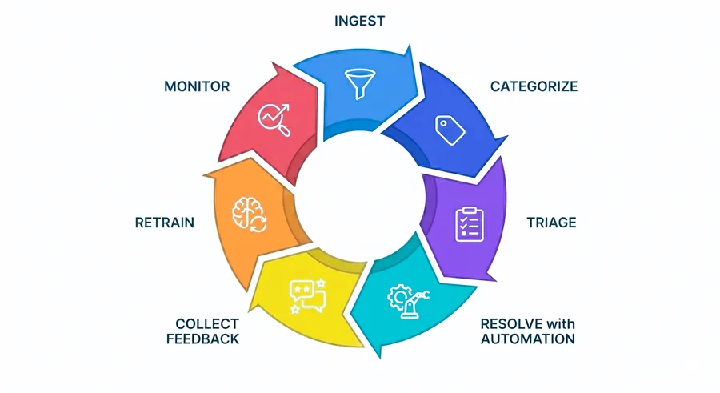

AI based Case Intelligence
Case Intelligence
for BFSI.
Designed for Banks, NBFCs and Fintechs facing rising complaint volumes, audit escalations, and tension between DPDP data minimisation and long-term regulatory retention.
Complaints inbound.
Operational risk.
As complaint volumes rise, small inefficiencies compound into operational risk, escalations and audit stress.
Rising inbound volume
Complaints flow in from apps, branches, partners and regulators.
Manual tagging & routing
Teams rely on judgement calls, emails and spreadsheets.
Repeat issues unseen
Similar complaints handled in isolation across teams.
Audit-heavy reviews
Evidence is reconstructed manually under time pressure.
Explainability gap
Retain less data, yet explain every decision to regulators.
One focused lifecycle.
Designed to improve complaint handling without rip-and-replace or process upheaval.

- 01Ingest complaints
- 02Classify & prioritise
- 03Detect duplicates
- 04Route to right team
- 05Create audit trail
Built for
regulated environments.
Case intelligence that understands BFSI — and keeps a human in charge.
- BFSI-specific complaint classification
- Product, issue and channel detection
- Similarity linking across cases
- Configurable rules and human override
Retain what matters.
Explain every step.
ArthaShield is built with privacy-by-default principles, helping institutions minimise unnecessary personal data exposure while preserving the operational history required for audits, reviews and investigations.
Instead of storing everything forever, the platform focuses on retaining what matters — and clearly explaining what happened at every step.
Capture only the data required for complaint handling and statutory retention.
Separate short-lived personal identifiers from long-lived case intelligence.
Maintain visibility into who accessed a case, when and why.
Configure retention policies by product, issue type and regulation.
The platform relies on proven enterprise grade technologies to ensure transparency, scalability and long-term sustainability — without creating opaque data silos. See the architecture
Join the early-access beta for BFSI.
We’re onboarding a limited set of Banks, NBFCs and Fintechs to co-build the next generation of case intelligence.